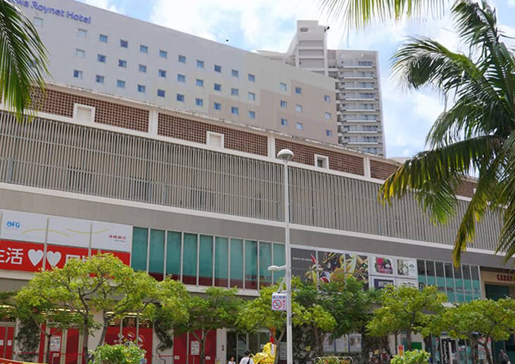
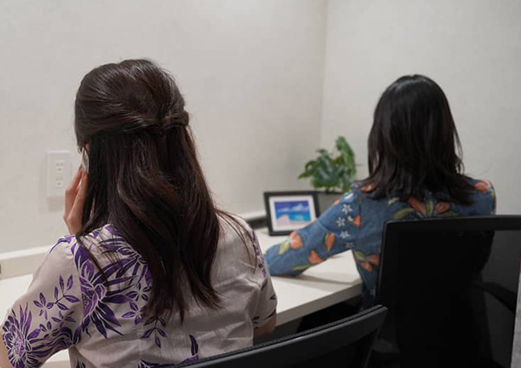
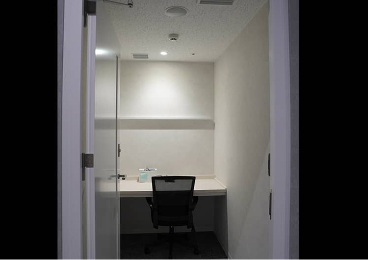
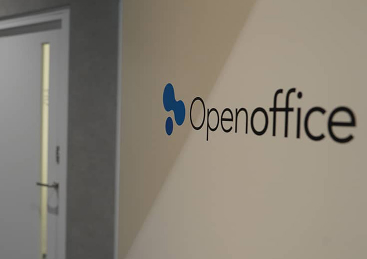

【個室レンタルオフィス】
オープンオフィス牧志駅前
- オフィス詳細
- 周辺ガイド
2024年オープンオフィス牧志駅前がNEW OPEN
モノレール「牧志」駅からは徒歩1分、那覇空港からもモノレールで約16分の立地にあり、商業店舗やホテルも併設している複合商業施設です。施設内は、スーパーマーケット、銀行、フィットネスクラブもあり、那覇の観光名所「国際通り」からも近く、ビジネスと観光が両立しているエリアにあります。





オープンオフィス牧志駅前が提供するオフィスサービス
-
 高速インターネット＜光ファイバー＞
高速インターネット＜光ファイバー＞
- 100Mbpsの光ファイバーによるブロードバンド環境をご用意しました。各部屋に配線済みですので、パソコンに繋げばすぐLAN経由で高速インターネットを利用出来ます。
-
 ネットワーク・カラーレーザープリンタ+スキャナー
ネットワーク・カラーレーザープリンタ+スキャナー
- ネットワークを利用して、各お部屋のパソコンから印刷できます。プリンタをご用意いただく必要もございません。
スキャナー機能も搭載しております。
-
 カラーレーザーコピー
カラーレーザーコピー
- フロア内にご用意してあります。カード方式でコピーが出来ますので、小銭の準備が不要です。
-
 ICカードキーによる入室管理
ICカードキーによる入室管理
- 専用ICカードを使ったホテル式のスマートシステムを用いて、セキュリティーを向上させています。
-
 ミーティングルーム（会議室）
ミーティングルーム（会議室）
- 商談・会議にご利用いただける共有スペースをご用意しています。インターネットで簡単に予約をしていただけます。
-
 無線LAN（WiFi）
無線LAN（WiFi）
- 共有スペースとミーティングスペースにて、無線LAN(WiFi)サービスをご利用いただけます。

オープンオフィス牧志駅前の特徴

モノレール「牧志」駅からは徒歩1分、那覇空港からもモノレールで約16分
那覇の観光名所「国際通り」からも近く
内装、家具、インターネット環境など設備完備
1名様～大人数まで豊かなオフィスバリエーション
セキュリティキーシステムにて24時間365日ご利用可能
オフィス周辺のMap
オープンオフィス牧志駅前近隣のスポット
- ■銀行
-
琉球銀行
沖縄銀行 - ■レストラン
- 食彩健美 野の葡萄 沖縄カーゴス店
アメリカ食堂
五星そば
CRAZY DOG CAFE - ■ホテル
- ダイワロイネットホテル那覇国際通り
リッチモンドホテル那覇久茂地 - ■ショップ
- エニタイムフィットネス牧志店
ファミリーマートさいおんスクエア店
セブン-イレブン 国際通り安里１丁目店
ファミリーマート 国際通り牧志駅前店
オープンオフィス牧志駅前の住所・アクセス
- 住所:
- 沖縄県那覇市安里二丁目1‐1 CARGOES 2F
- 電車からのアクセス:
- ゆいレール「牧志駅」 直通

リージャスグループの説明
リージャス・グループは、柔軟なワークスペースを提供する世界最大の企業です。そのネットワークは世界120カ国1,100都市、3300拠点に及びます。会員数は250万人で、業界で成功を収める大小様々な企業や起業家の方々にご利用いただいています。
リージャスは、個室タイプのレンタルオフィス、コワーキングスペースなど多彩なオフィスプラン、近年需要が高まるモバイルワークやバーチャルオフィス、障害復旧サービスの提供を通じ、お客様が予算やワークスタイルに合わせて仕事を行うことができる環境を提供いたします。